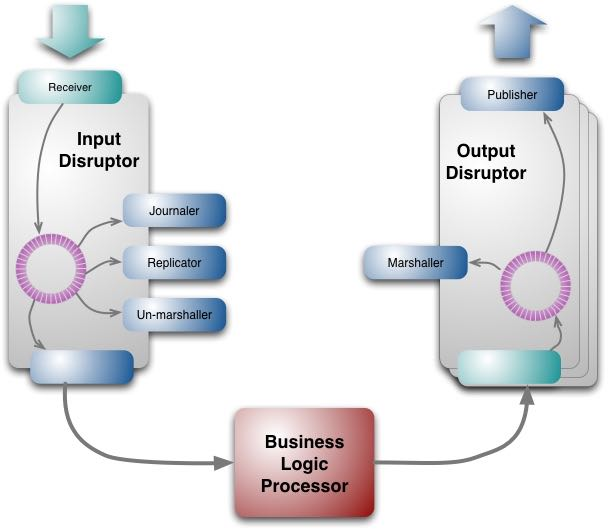
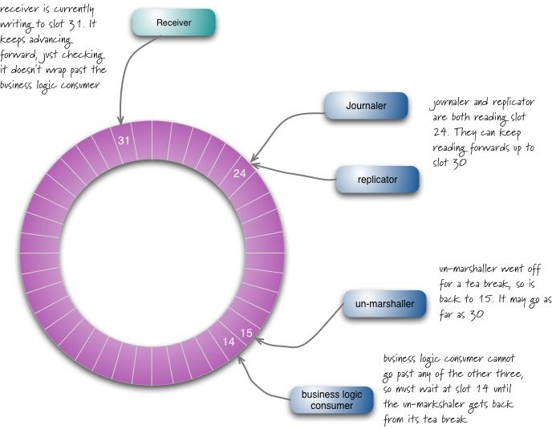
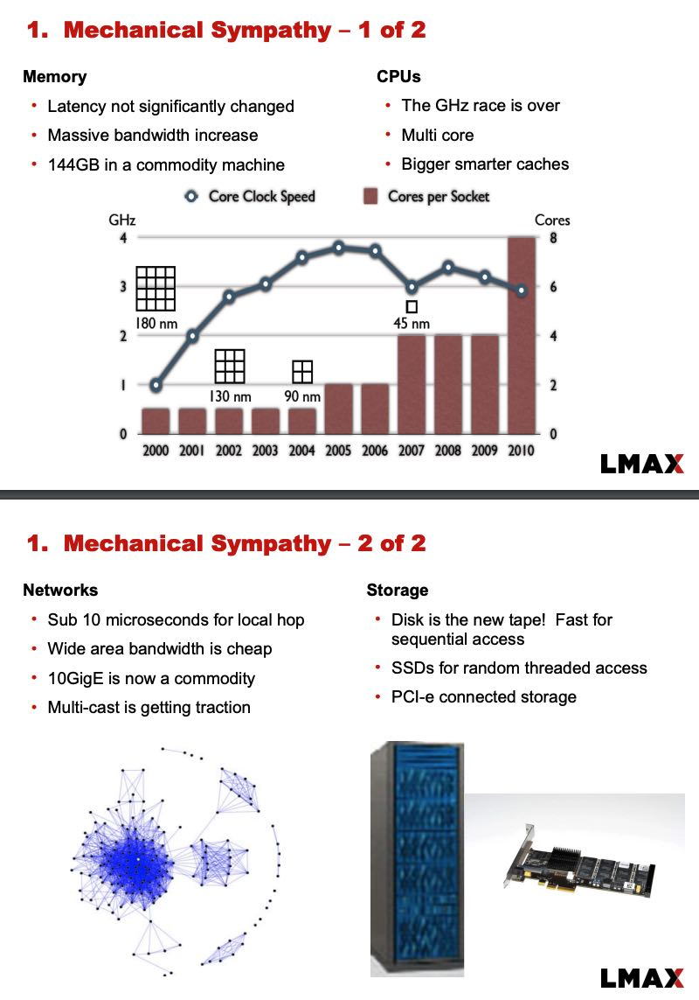
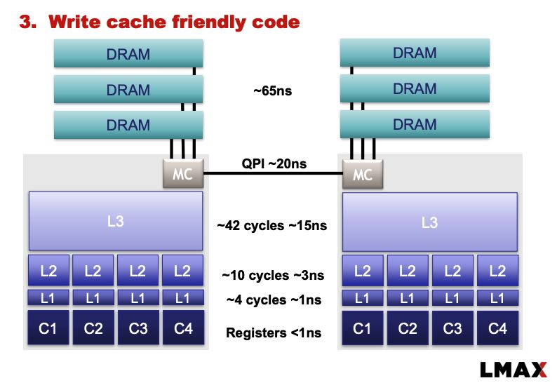
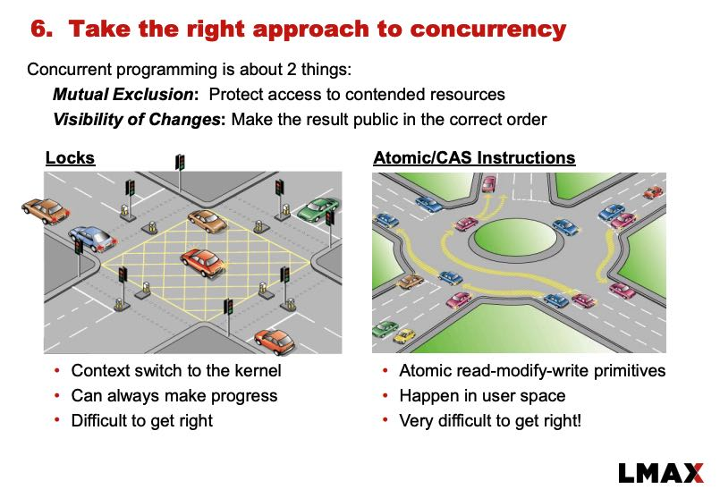

The LMAX Architecture
https://martinfowler.com/articles/lmax.html https://www.infoq.com/presentations/LMAX/
感觉架构上也不是特别复杂，其中input/output disruptor类似两个queue, 然后这两个queue满足一写多读并且是lock-free的，可以认为LMAX Arch里面最重要的就是这个disruptor的实现 https://lmax-exchange.github.io/disruptor/
下图中有4个reader：un-marshaller, replicator, journaler, 以及BLP(bussiness logic processor). 几个reader之间通常是相互独立的。

下图可以看到每个reader之间的关系，其中BLP依赖于其他三个reader，而另外三个reader之间是完全独立的，不能超过receiver的水位。

关于为什么要实现这个disruptor，Martin Fowler解释得非常清楚，我也是第一次明白 "mechnical sympathy"的含义：赛车手有对自己的赛车有某种直觉，知道怎么才能充分发挥出赛车的性能。对于机器也是如此，只有懂得和摸清楚了机器的脾气，才能充分发挥出机器的性能。
最开始的时候，LMAX也使用了actor model. actor model本身执行性能是非常不错的，但是在通信方面需要通过queue进行message passing, 而queue对cache影响非常大：因为queue不是无锁的所以需要lock, 不可避免地会出现线程的切换，而线程切换对cache损害很大。所以最好的方式是，不要因为queue出现任何线程切换，然后所有的reader/actor都可以使用lock-free的方式不断地从里面读取数据。如果每个reader/actor使用一个线程，并且期间不被切换出去的话，那么cache就能做的非常好。
> When pushing performance like this, it starts to become important to take account of the way modern hardware is constructed. The phrase Martin Thompson likes to use is "mechanical sympathy". The term comes from race car driving and it reflects the driver having an innate feel for the car, so they are able to feel how to get the best out of it. Many programmers, and I confess I fall into this camp, don't have much mechanical sympathy for how programming interacts with hardware. What's worse is that many programmers think they have mechanical sympathy, but it's built on notions of how hardware used to work that are now many years out of date.
> One of the dominant factors with modern CPUs that affects latency, is how the CPU interacts with memory. These days going to main memory is a very slow operation in CPU-terms. CPUs have multiple levels of cache, each of which of is significantly faster. So to increase speed you want to get your code and data in those caches.
> At one level, the actor model helps here. You can think of an actor as its own object that clusters code and data, which is a natural unit for caching. But actors need to communicate, which they do through queues - and the LMAX team observed that it's the queues that interfere with caching.
> The explanation runs like this: in order to put some data on a queue, you need to write to that queue. Similarly, to take data off the queue, you need to write to the queue to perform the removal. This is write contention - more than one client may need to write to the same data structure. To deal with the write contention a queue often uses locks. But if a lock is used, that can cause a context switch to the kernel. When this happens the processor involved is likely to lose the data in its caches.
https://www.infoq.com/presentations/LMAX/
另外一个QCon视频上作者也分享了不少好东西（2010年的视频）
关于Mechnical Sympathy，了解当下硬件发展趋势是非常有必要的，CPU和内存就不必说了，网络上万兆网卡非常普遍，局域网上local hop大约在10micros. SSD也非常普及，并且使用PCIe和CPU进行连接

普遍的CPU架构是这样的，socket之间使用QPI进行通信，基本都是NUMA架构

关于用户态锁和内核态锁之间的差别，给了一个非常形象的比喻：使用内核态锁就好像使用红绿灯，每辆汽车在穿越红绿灯的时候可能需要停下来，等待绿灯重新启动，至于什么时候启动时间也不好判断；而使用用户态锁就好像在一个转盘上行驶，大部分时候运转良好，但是如果出现拥塞的话也会造成忙等。
